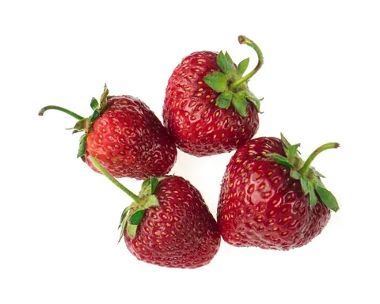
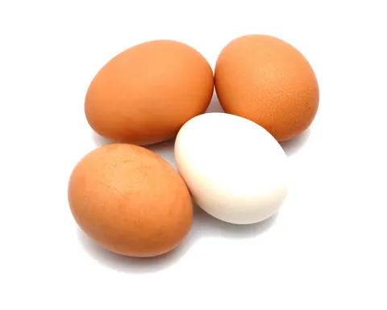
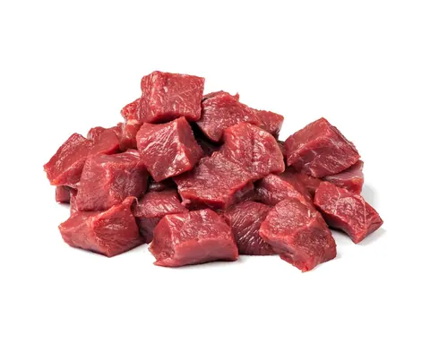

In short
- Foods can come in any order; there's no need to start with vegetables.
- Put iron first: meat, fish, eggs, beans, lentils, tofu or iron-fortified cereal.
- Offer one new single-ingredient food at a time, 3 to 5 days apart.
Any order works
For most babies, foods don't need to come in a certain order. There's no evidence that offering fruit first makes a baby dislike vegetables.
Put iron first
From about 6 months, your baby needs iron and zinc from food. Include foods like:
- Pureed meat, poultry or fish
- Iron-fortified infant cereal
- Eggs
- Beans, lentils and tofu
One at a time
Offer one single-ingredient food at a time, and wait 3 to 5 days before the next new food. That makes it easier to spot a reaction.
Build variety
By 7 or 8 months, many babies are eating foods from every group: vegetables, fruits, proteins, dairy without added sugar, and whole grains.
If you use infant cereal, rotate oat, barley and multigrain rather than only rice cereal, which can raise arsenic exposure.
Two types of iron
Full-term babies are born with iron stores that run low by about 6 months, while their fast-growing brain needs plenty of iron.
- Iron from animal foods (heme iron) is easier to absorb: meat such as beef and turkey, and fish.
- Iron from plant foods and eggs (non-heme iron) is absorbed less easily: beans, lentils, tofu, spinach, egg yolk and iron-fortified infant cereal.
- Your baby absorbs plant iron better with a vitamin C food, like lentils with tomatoes, or spinach with strawberries or a squeeze of lemon.
Foods in this article
- Spinach

Strawberries
Egg
Beef
How to serve each one at every age is in the app's food guide.
At your baby's own pace
Every baby builds chewing skills and iron stores at their own rate. If you're worried about your baby's iron, signs of anemia, or ongoing trouble chewing or swallowing, talk to your pediatrician or a pediatric feeding or speech therapist.
Sources
- When, What, and How to Introduce Solid Foods · CDC
- When Can Babies Start Solid Foods? · AAP (HealthyChildren.org)
- Iron · CDC
- Foods and Drinks to Encourage · CDC
All articles, recipes, guides, tips and chat answers in Mama & Baby Bites are for general information and education only. They are not medical, pediatric or nutritional advice, and they don't replace care from a qualified professional. In an emergency, call 911.